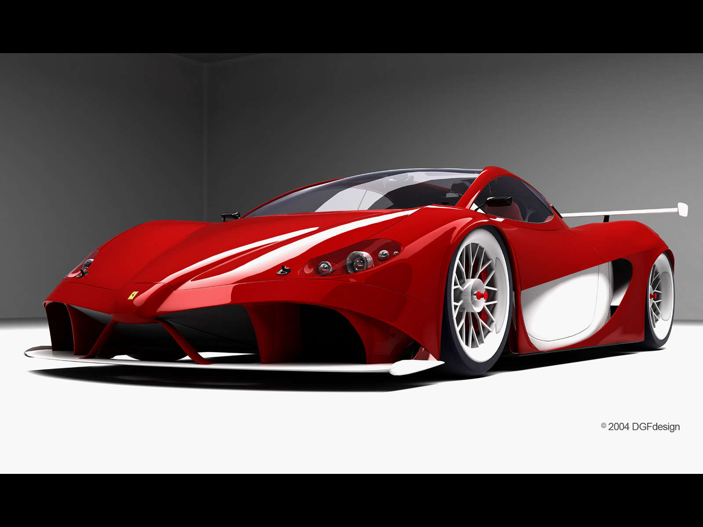

As a result, Gardini was ousted, as was Scuderia Ferrari manager RomoloTavoni, chief engineer Carlo Chiti, experimental sports car development chief Giotto Bizzarrini, and a number of others who stood by them. All were tremendous losses to the company, and many thought this might be the end of Ferrari. Indeed, the defectors immediately formed a new company, ATS, to directly compete with Ferrari on the street and the track, and took with them ScuderiaSerenissima, one of Ferrari's best racing customers. This "great walkout" came at an especially difficult time for Ferrari. At the urging of Chiti, the company was developing a new 250-based model to defend its honor against the Jaguar E-Type. Development of this car, the 250 GTO, was at a critical point, with the chassis development and styling left incomplete. Even if the car could be finished, it was unclear if it could be raced successfully without Tavoni and his lieutenants. Into this void stepped young engineer Mauro Forghieri and long-time racing bodyman Sergio Scaglietti. Forghieri successfully honed the GTO's handling and Scaglietti designed an all-new body for the car. The GTO went to Sebringwith driver Phil Hill and placed first in class. It continued winning through 1962, brushing aside the challenge from Jaguar and becoming one of the most famous sports cars in history. This shakeup, and Forghieri's engineering talent, made the 1960s even more successful for Ferrari than the previous decade. The mid-engined Dino racers laid the foundation for Forghieri's dominant 250-powered 250 P. On the street, theDino road cars sold strongly, and legendary models like the 275 and Daytona were on the way.